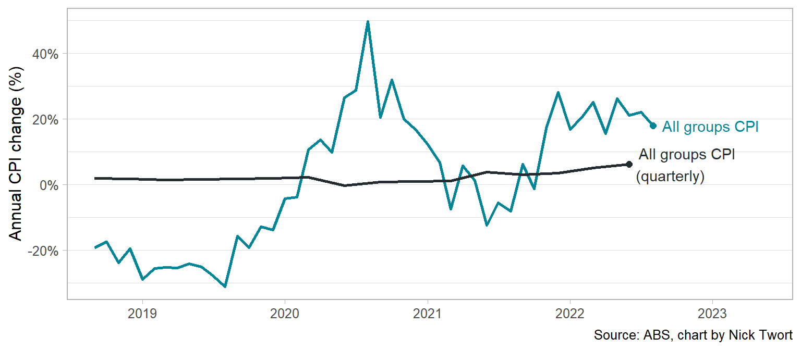
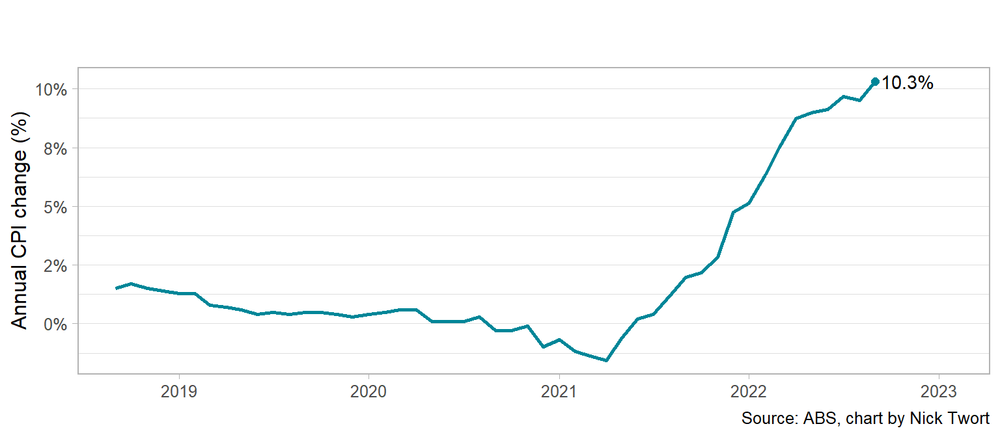
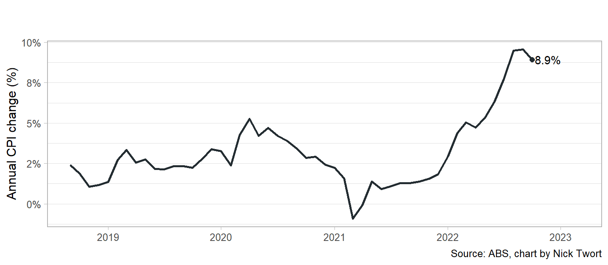

New monthly CPI indicator released for Australia
Introduction
On 26 October 2022, the Australian Bureau of Statistics (ABS) commenced publication of a new monthly Consumer Price Index (CPI) indicator for Australia.1 This indicator complements the existing quarterly CPI indicator (which will remain the key measure of inflation in Australia).
Prior to this release, Australia and New Zealand were the only two OECD countries that did not produce a monthly CPI indicator, and Australia was the only G20 country not to do so.
This article sets out some background to the CPI and dives briefly into the first release of the monthly indicators.
Background
The CPI measures changes in the price of a basket of goods and services purchased by a typical household.2 The basket of goods and services is selected to cover a wide range of goods and services purchased by households, including food, clothing, housing, furnishings, health and transport.3
The CPI is commonly used as a measure of household inflation, which is a sustained increase in the general price level in an economy, and is used to assist government economists in conducting montetary policy, with the Reserve Bank targeting an explicit medium-term inflationary target measured by the CPI.
Basket of goods and services
The ABS selects a limited sample of goods and services bought by households. The limited sample is intended to have price movements that are representative of a much wider range of goods and services. The ABS groups price measurements of individual goods or services (such as, say, a 420g tin of baked beans) into ‘elementary aggregates’, containing serveral price measurements for a particular good or service. These are grouped further into ‘expenditure classes’ of similar goods or services (such as vegetables), ‘sub-groups’ (such as fruit and vegetables) and ‘groups’ (food and non-alcoholic beverages).
The current groups, sub-groups and expenditure classes are set out below.
In order to progress from individual price measurements of one good or service to aggregate price movements, the measurements need to be ‘weighted’ to ensure the overall basket reasonably represents a household’s expenditure. In Australia, weights are derived from the Household Expenditure Survey (HES), which is a sample of around 8,000 households who record their expenditure over a two-week period.4
Price measurements
The ABS collects prices using three main methods:5
- personal visits;
- online and telephone collection; and
- scanner, transactions and other data.
The frequency of price collection varies across different basket items. Some items are measured only once a year, especially when these prices are known to adjust only at that frequency, such as council rates. Other items are measured much more frequently.
It has historically been very resource intensive to collect frequent prices. However, the increased availability and use of scanner data and automated web-scraping techniques have allowed for higher-frequency collection at a lower cost than personal or telephone data collection.6
The ABS has recently acquired a monthly data series for rental price information, resulting in it now measuring prices on a monthly basis for 43 per cent of the weight of the CPI basket,7 and so the ABS’ new monthly CPI indicator can represent more-up-to-date prices for between 62 and 73 per cent of the weight of the CPI basked, depending on the month.
The monthly index
Figure 1 below shows that the monthly CPI indicator tracks closely with the existing quarterly indicator. Inflation for the year to September 2022 was:
- 7.3%, according to the monthly indicator; and
- 7.3%, according to the quarterly indicator.

The monthly index shows that the Housing group increased most over the last year – by 10.3%, shown in Figure 2.

The Food and non-alcoholic beverages group increased the next most – by 9.6% – see Figure 3.

Conclusion
Although the quarterly CPI series will remain Australia’s key measure of inflation, the monthly CPI series will be an important tool for businesses and consumers to track how costs are changing over time – being published with about a one-month lag. As cost-of-living pressures continue to be at the forefront of Australian households, measuring prices of food, fuel and housing/rent prices monthly could help keep household budgets in check.
Footnotes
ABS, Introducing a monthly Consumer Price Index (CPI) indicator for Australia, Information paper, 16 August 2022.↩︎
ABS, Consumer Price Index, Australia methodology, 27 July 2022.↩︎
There are 11 groups in the basket for Australia: food and non-alcoholic beverages; alcohol and tobacco; clothing and footwear; housing; furninshings, household equipment and services; health; transport; communication; recreation and culture; education; and insurance and financial services.↩︎
The HES is adjusted to account for under reporting of some commodities and a recall adjustment. The HES is also supplemented by additional sources.↩︎
ABS, Consumer Price Index: concepts, sources and methods, Price collection procedures.↩︎
See, for example: ABS, Making greater use of transactions data to compile the Consumer Price Index, Australia, Information paper, 29 November 2016.↩︎
ABS, Introducing a monthly Consumer Price Index (CPI) indicator for Australia, Information paper, 16 August 2022.↩︎